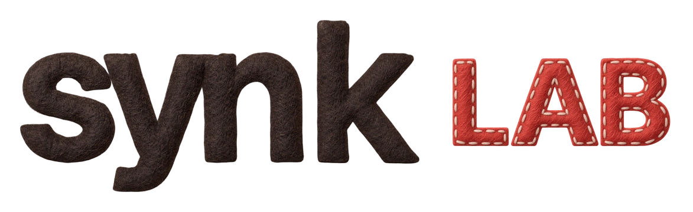

01 / RACING체험 시안
BOOST
한국어가 부스터가 된다.
들리는 단어의 그림이나 글자를 찾아 차로 통과하세요. 정답을 맞히면 부스터가 터지고, 추월할 기회가 열립니다.
듣기 · 그림 · 글자

PLAY해안도로를 준비하고 있어요
이 브라우저에서 3D 화면을 열지 못했어요.
게임 구상 보기 ↓귀로 듣고, 길을 고르고, 앞차를 추월한다.
바다를 따라 달리는 짧은 한국어 레이스.
LEVEL 1 · 짧은 문장 듣기
← → / A D 이동 · ↑ W 현재 길 선택
휴대폰은 아래 방향 버튼으로 조작
← 버튼 또는 A 키
직접 플레이한 단어 기록은 이 브라우저에 저장해요.
6단계 도전 코스에서 듣고 읽고 판단하세요.
기초 어휘 2,000개는 별도 연습에서 언제든 다시 만날 수 있어요.
짧은 문장 듣기 · 다음 추천
5문제 중 4문제를 맞히면 다음 코스가 열려요. 챕터마다 두 코스 다음에 새 문장 결승전과 특별 꾸미기 보상이 기다려요. ◆◆◆ 전부 정답 · ◆◆ 코스 통과.
TOPIK I 대비를 위한 어휘 연습 시안입니다. 국립국어원 학습용 어휘 목록(2003)의 기초·확장 어휘에서 선정했습니다. 단어 정답 기록은 암기 완료나 TOPIK 합격을 뜻하지 않습니다. 문장 도전은 직접 만든 연습 문항이며 실제 시험 문제나 급수 판정은 아닙니다. 18개 도전과 400개 어휘 스테이지는 해안 지형을 공유하고 꽃빛·섬과 항구·노을의 세 풍경으로 구성됩니다.
완주 보상과 컬렉션은 같은 브라우저의 세 게임에서 이어져요. 차량과 꾸미기는 동일한 기본 주행 성능을 사용해요.
추월하는 순간, 장애물을 피하는 순간, 콤보가 이어지는 순간.
한국어를 이해한 행동이 게임의 흐름을 바꿉니다.
들리는 단어의 그림이나 글자를 찾아 차로 통과하세요. 정답을 맞히면 부스터가 터지고, 추월할 기회가 열립니다.
“왼쪽으로 가!”, “점프하지 마!” 짧은 부탁을 듣고 이동·점프·숙이기로 수행하세요. 90초 여행의 등불을 밝히며 표현을 다시 만나요.
음악을 연주하며 들리는 문장의 내용이 맞는지 O/X로 고르세요. 한국어 정답과 연주 타이밍을 따로 확인하고 새 문장으로 다시 만나요.
한 번 만난 단어를, 다른 순간에 다시.
같은 단어도 그림과 위치를 바꾸어 다시 만나도록 설계합니다. 재미와 학습 효과는 실제 플레이로 확인하며 다듬어갑니다.